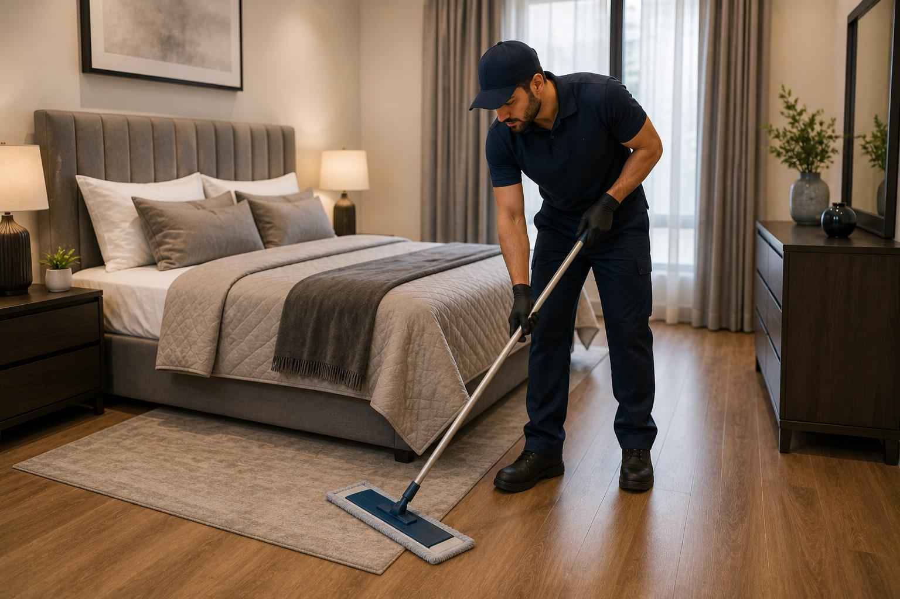
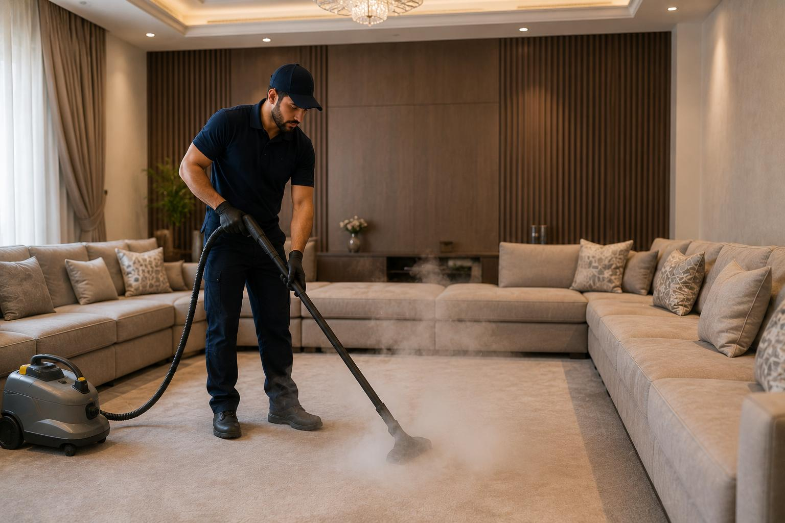
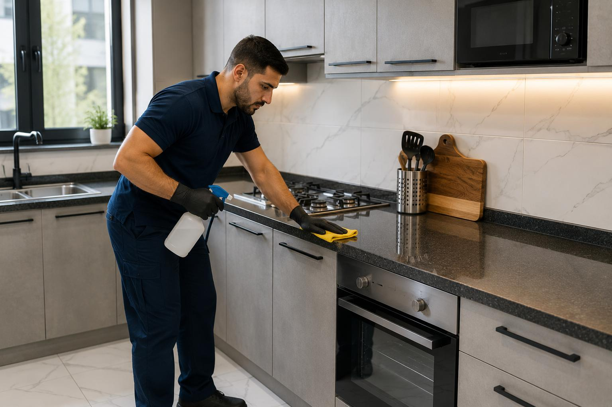
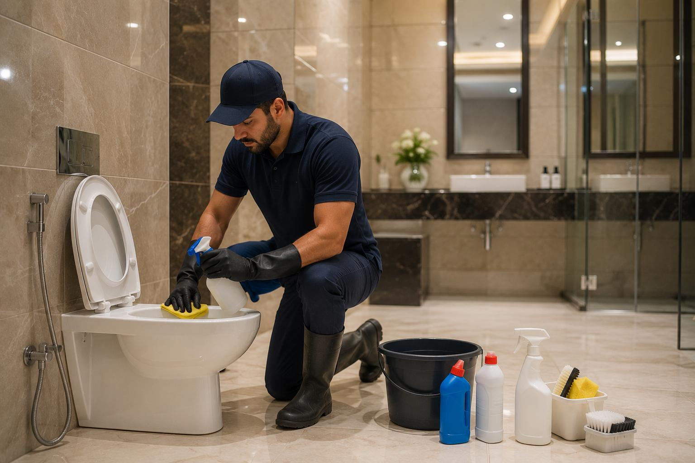
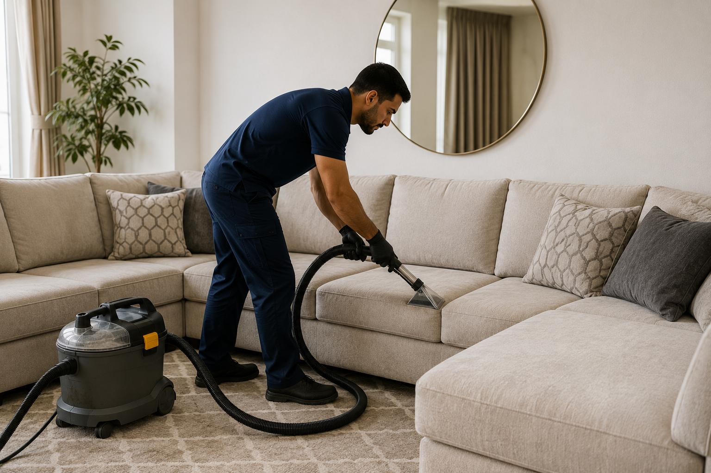
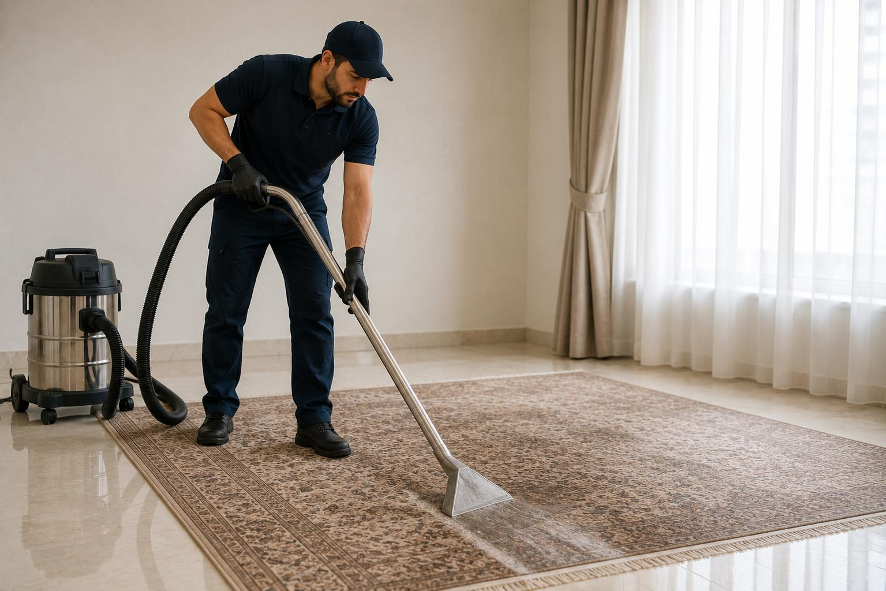
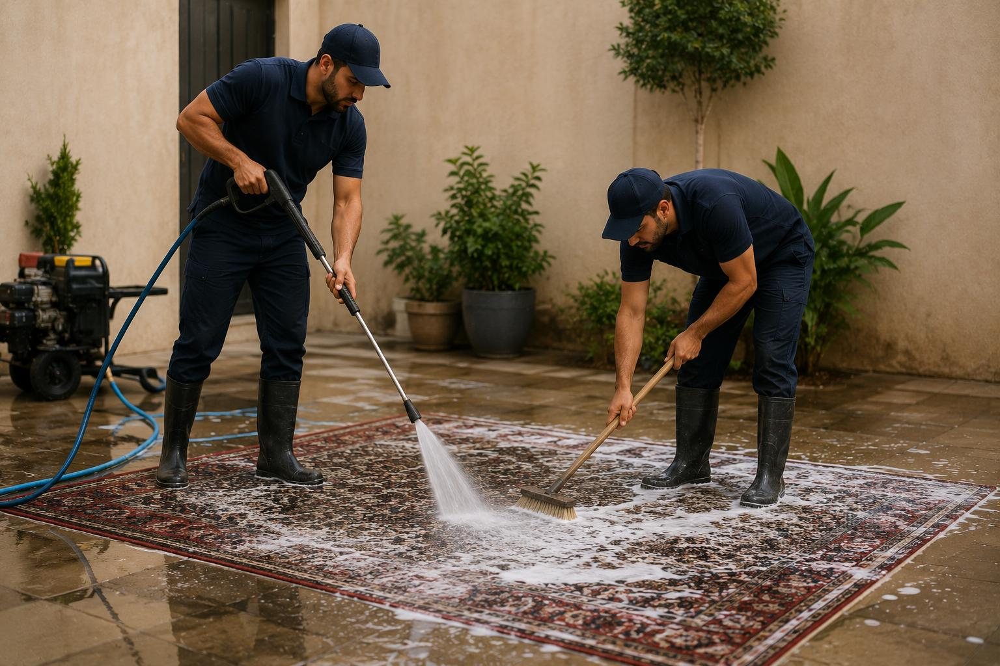

خدمات النظافة المنزلية
تنظيف شامل للمنازل والشقق، وتنظيف عميق للسجاد والمجالس بالبخار، إضافة إلى تعقيم المطابخ والحمامات، بأدوات ومعدات حديثة.
اطلب موعد تنظيف عبر واتسابتنظيف المنازل والشقق
يعتبر البيت هو الملاذ الآمن لكل شخص، والحفاظ عليه نظيفاً ومعقماً يعزز من صحة أفراد العائلة وراحتهم النفسية. تقدم شركة خيول الحجاز خدمة شركة تنظيف منازل متميزة، حيث يغطي عملنا كافة التفاصيل الدقيقة التي قد يتم التغاضي عنها في التنظيف اليومي الاعتيادي. نحن هنا لمساعدتك في إزالة الغبار المتراكم، تعقيم المفروشات، تنظيف مجاري النوافذ، وجلي الأرضيات لتستعيد بريقها الأصيل دون إجهاد لربات البيوت.
هذه الخدمة مثالية للعائلات التي ترغب في القيام بتنظيف موسمي عميق (قبل الأعياد أو المناسبات الخاصة)، أو لأصحاب العقارات الراغبين في إجراء تنظيف شقق سكنية وتجهيزها قبل عرضها للإيجار أو البيع. كما تناسب تماماً خدمة تنظيف بعد التسليم لكل من انتهى من تشطيب منزله الجديد ويبحث عن إزالة بقايا الدهانات والإسمنت والجبس قبل نقل الأثاث الفعلي والعيش فيه.
💡 إذا كنت قد قمت بتنظيف بيتك استعداداً للانتقال إلى مكان آخر، فيمكنك الاستعانة بخدمتنا في نقل العفش المنزلي لتوفير مجهود النقل والترتيب بالكامل.
نعم، نحن متخصصون في التنظيف بعد التشطيب وإزالة بقع الدهانات والإسمنت المتراكم على الأرضيات والسيراميك والزجاج باستخدام شفرات ومواد كيميائية مخصصة لا تسبب أي خدوش للأسطح.
ليس من الضروري تواجدك طوال الوقت، حيث يمكنك تسليم المنزل لمشرف الفريق والعودة عند اكتمال العمل لمعاينته، فنحن نضمن أمانة كاملة وموثوقية عالية لجميع أفراد فريقنا.

professional-bedroom-cleaning-service.jpg
steam-cleaning-living-room-majlis-sofa.jpgتنظيف السجاد والمجالس
المجالس هي واجهة البيت السعودي ومكان استقبال الضيوف والزوار، ولأنها تُستخدم بشكل مستمر، فهي سريعة الاتساخ وتراكم الأتربة والبقع الصعبة الناتجة عن سكب المشروبات أو الأطعمة. تعتمد شركة خيول الحجاز على خدمة تنظيف سجاد ومجالس بالبخار، وهي الطريقة الأحدث والآمن التي تضمن تفكيك البقع المستعصية من جذورها وقتل الجراثيم والروائح العالقة بالنسيج، دون التأثير على جودة ولون الأقمشة أو تعريضها للتلف والبهتان.
يحتاج هذه الخدمة كل من يمتلك مجالس فخمة أو صالونات كنب مصنوعة من أقمشة حساسة (مثل الحرير، القطيفة، أو الشامواه)، والعائلات التي لديها أطفال صغار أو حيوانات أليفة تسبب بقعاً متكررة وروائح في السجاد، إضافة إلى المساجد والمكاتب التجارية التي تحتوي على موكيت بمساحات واسعة يحتاج إلى غسيل وتطهير دوري لضمان بيئة نظيفة وصحية للجميع.
💡 أثناء غسيل وتنظيف السجاد والمجالس الفخمة، يجب الانتباه إلى حماية بقية قطع أثاثك؛ يمكنك التعرف على خدمة تغليف الأثاث وحمايته لضمان عدم تأثر الخشب أثناء التنظيف.
نعم، نستخدم مذيبات بقع مخصصة لكل نوع من أنواع الأوساخ قبل تطبيق البخار، وهو ما يساعد في إزالة معظم البقع الصعبة بكفاءة، إلا أن بعض البقع التي تسببت في تلف صبغة القماش نفسها قد لا تزول بالكامل ولكن يتحسن مظهرها كثيراً.
بفضل استخدام ماكينات شفط المياه فائقة القوة، فإن الكنب والمجالس تحتاج فقط إلى ما بين ساعة إلى 3 ساعات كحد أقصى لتجف تماماً وتصبح جاهزة للاستخدام مرة أخرى.
تنظيف المطابخ
المطبخ هو قلب البيت النابض ومكان إعداد الوجبات اليومية، ولذلك فهو البيئة الأكثر عرضة لتراكم الشحوم والدهون المتطايرة على الجدران والدواليب، وتكاثر البكتيريا في الزوايا الرطبة. توفر شركة خيول الحجاز خدمة تنظيف مطابخ متكاملة وعميقة. نركز على جلي الأسطح الرخامية والجرانيتية، تنظيف الأجهزة الكهربائية (مثل الأفران والميكروويف)، وإزالة بقع الاحتراق والشحوم الصعبة ليعود مطبخك صحياً ولامعاً وخالياً تماماً من الأوساخ والروائح غير المحببة.
تستهدف هذه الخدمة ربات البيوت اللاتي يجدن صعوبة في إزالة طبقات الدهون المتراكمة على شفاطات المطابخ والأسقف، والعائلات المنتقلة إلى منزل جديد وتود تنظيف وتعقيم دواليب المطبخ من الداخل والخارج قبل وضع الأواني والأطعمة، وكذلك المطاعم والمطابخ التجارية التي تلتزم بمعايير صارمة للبلدية والصحة العامة وتطمح للوقاية من الآفات والحشرات.
💡 إذا كنت بصدد فك مطبخك أو تركيب مطبخ جديد في بيتك، يمكنك مراجعة خدمة فك وتركيب الأثاث التي يقدمها نجارونا المحترفون.
نعم، تشمل الخدمة تنظيف الأفران وإزالة الدهون والصدأ من الداخل والخارج، كما نقوم بتفريغ الدواليب وتنظيفها وتعقيمها بالكامل قبل إعادة ترتيب الأواني بها.
بالتأكيد، نستخدم مواد تنظيف مصرحة ومطابقة للمواصفات وآمنة على الصحة العامة، ونحرص على شطف الأسطح بالماء المعقم وتجفيفها جيداً لضمان خلوها من أي بقايا كيميائية.

professional-kitchen-cleaning-service.jpg
bathroom-deep-cleaning-and-disinfection-service.jpgتنظيف وتعقيم حمامات
تعتبر الحمامات أكثر الأماكن في المنزل رطوبة وعرضة لتراكم الجراثيم والبكتيريا، وتشكل الرواسب الكلسية والملحية والصدأ على الحنفيات والخلاطات وسيراميك الجدران. تقدم شركة خيول الحجاز خدمة تنظيف حمامات وتعقيم شاملة تضمن لك مكاناً صحياً وآمناً. نحن نعتمد على منظفات قوية ومطهرات طبية فعالة تقضي على 99.9% من البكتيريا والفيروسات، وتعيد اللمعان للأدوات الصحية وخلاطات المياه والمرايا والزجاج بدقة متناهية.
يحتاج هذه الخدمة كل من يعاني من تراكم طبقات الكلس الأبيض والاصفرار على سيراميك الحمام والمغاسل، أو الراغبين في إجراء تعقيم طبي شامل للوقاية من الأمراض المعدية. كما أنها ضرورية جداً عند السكن في منزل جديد تم استخدامه سابقاً لضمان النظافة والتعقيم الفوري لجميع أفراد الأسرة قبل الاستخدام الفعلي.
💡 إذا كنت تود تخزين بعض الأثاث الخاص بحماماتك أو منزلك لتجديدها، ننصحك بالاطلاع على خدمة تخزين الأثاث للحفاظ على قطعك من الرطوبة والتلف.
نعم، نستخدم فرشاً كهربائية صغيرة ومواد حمضية متخصصة لتنظيف وتبييض الفواصل الإسمنتية وإزالة السواد والعفن الفطري المتراكم نتيجة الرطوبة المستمرة.
نستخدم مطهرات عالية الفعالية تحتوي على مركبات كلور طبية ومواد مضادة للبكتيريا لضمان تطهير كامل للأسطح والصنابير والمرحاض والتخلص من الروائح الكريهة.
نصائح خيول الحجاز
نشارك معك بعض التوجيهات الهامة والعملية التي تساعدك على التحضير المسبق لزيارة فريق التنظيف وضمان تحقيق أفضل النتائج الممكنة:
احرص على رفع الملابس والأوراق المهمة والأجهزة الإلكترونية الصغيرة وتخزينها في أماكن مغلقة لتسهيل عمل فريق التنظيف.
تفريغ الأطباق وبقايا الطعام من مغسلة المطبخ والأسطح الخارجية يساعد العمال على البدء فوراً في إزالة دهون الجدران والأفران.
أخبر مشرف الفريق بمواقع البقع المستعصية ونوعها (قهوة، طلاء، شحوم) في الكنب أو السجاد ليتعامل معها بالمواد المناسبة منذ البداية.
إذا كنت تنتقل لبيت جديد، احرص على حجز خدمة نقل العفش بعد إتمام عملية التنظيف الشامل لبيت مهيأ تماماً.
معرض الأعمال

sofa-deep-cleaning-service.jpg
professional-carpet-cleaning-with-pressure-washer.jpg
carpet-water-extraction-and-fast-drying-service.jpg